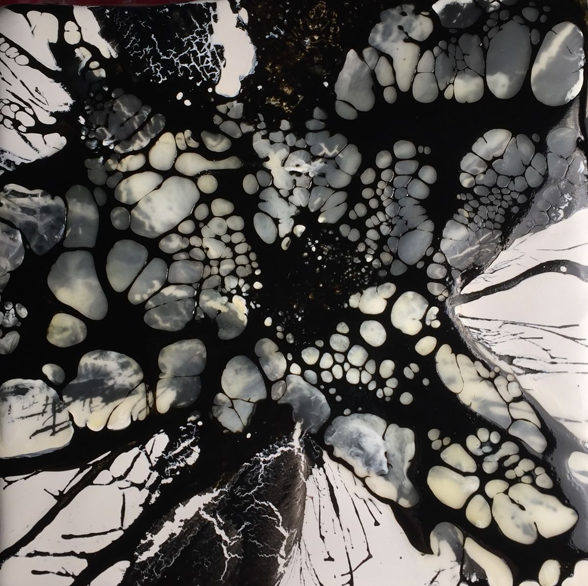
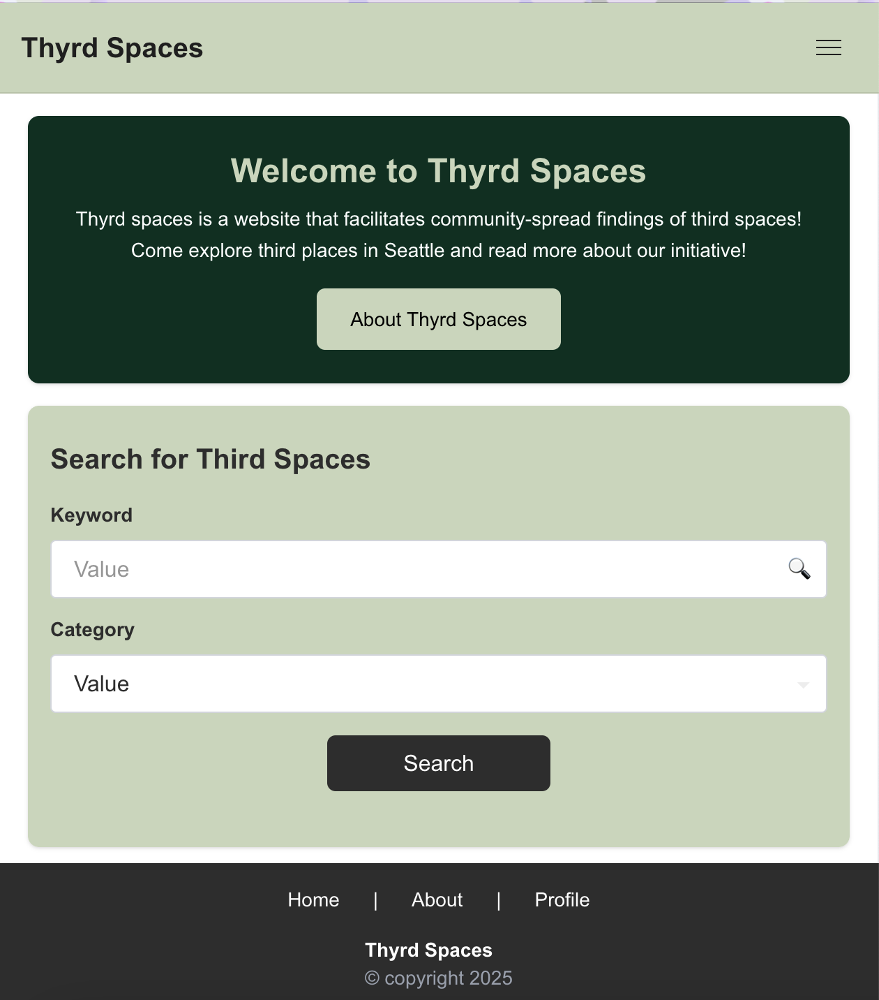
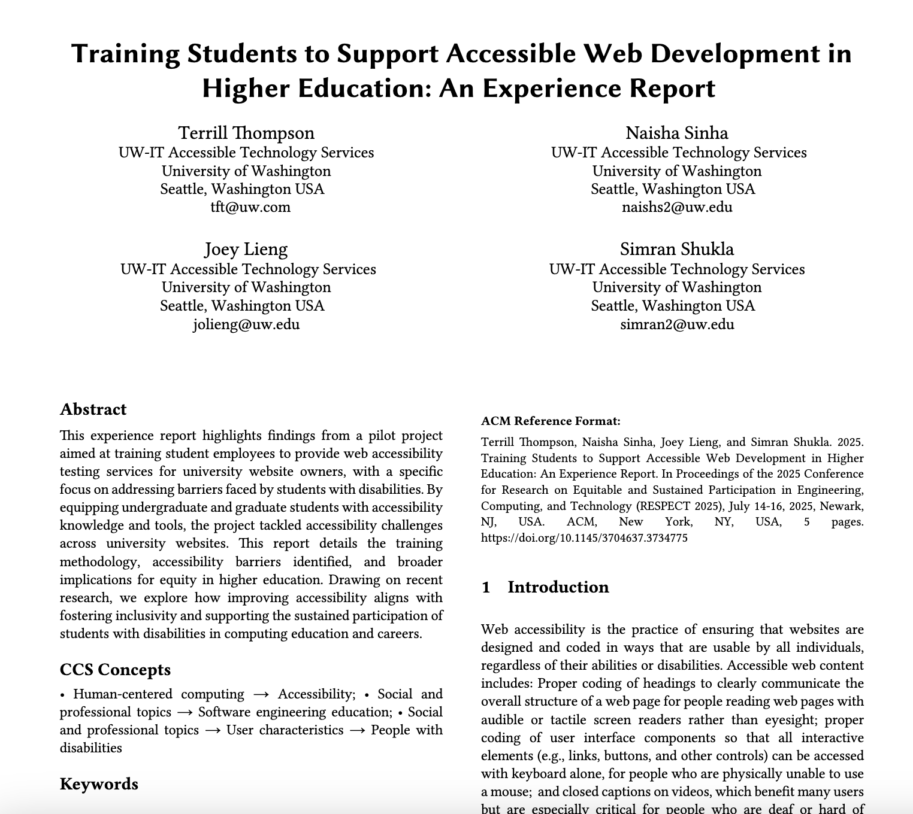
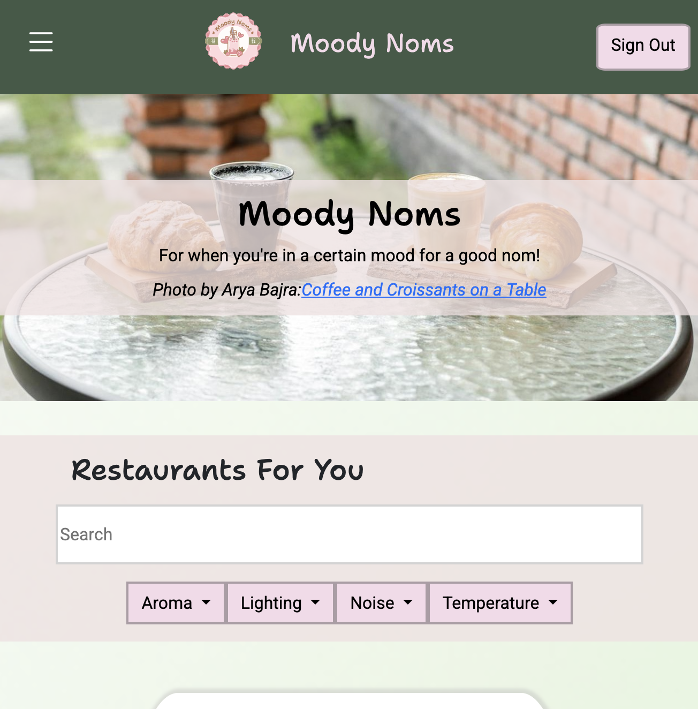

ABOUT JOEY LIENG
My name is Joey and I am a fourth year Philosophy and Informatics student at the University of Washington. I'm extremmely curious on how to leverage tech as a tool for equity. Throughout my time on campus, I've been particularly interested in digital accessibility, AI and tech ethics, and understanding the social structures that it all intersects with.
resume (pdf)PROJECTS I'VE WORKED ON
Thyrd Spaces
Thyrd Spaces is a web app intended to bridge Seattle residents with user-inputted third spaces within the Greater Seattle Area. It leaves room for "objective" reviews that describe more of the space and more "subjective" reflections that tell stories of the events that have taken place in these spaces.
Within this project, I primarly handled the design.

Training Students to Support Accessible Web Development in Higher Education: An Experience Report
This an experience report I had the privilege of co-authoring on the topic of digital accessibility and training students (with me as one of the students). We had all presented it at ACM RESPECT 2025 and it lives in RESPECT 2025: Proceedings of the 2025 COnference on Research on Equitable and Sustained Participation in Engineering, Computing, and Technology.

Moody Noms
Moody Noms is a web app intended for users to find restuarants and cafes within the Greater Seattle Area based off of sensory characteristics, such as sound, lighting, and smell. The content is also based off of user-inputted places.
While this project names tags on restaurants as "accessibility tags," I now find "sensory tags" to be much more aligned.
Within this project, I handled front-end development.

SKILLS
Technical Skills
- JavaScript
- Python
- HTML/CSS
- Java
- React
- Git/GitHub
- SQL
- Figma
Soft Skills
- Problem-solving
- Communication
- Team Collaboration
- Organization
- Adaptability
- Documentation
CONTACT ME!
Social Media
The tabpanel pattern comes from W3's APG! Copyright © 2026 World Wide Web Consortium.